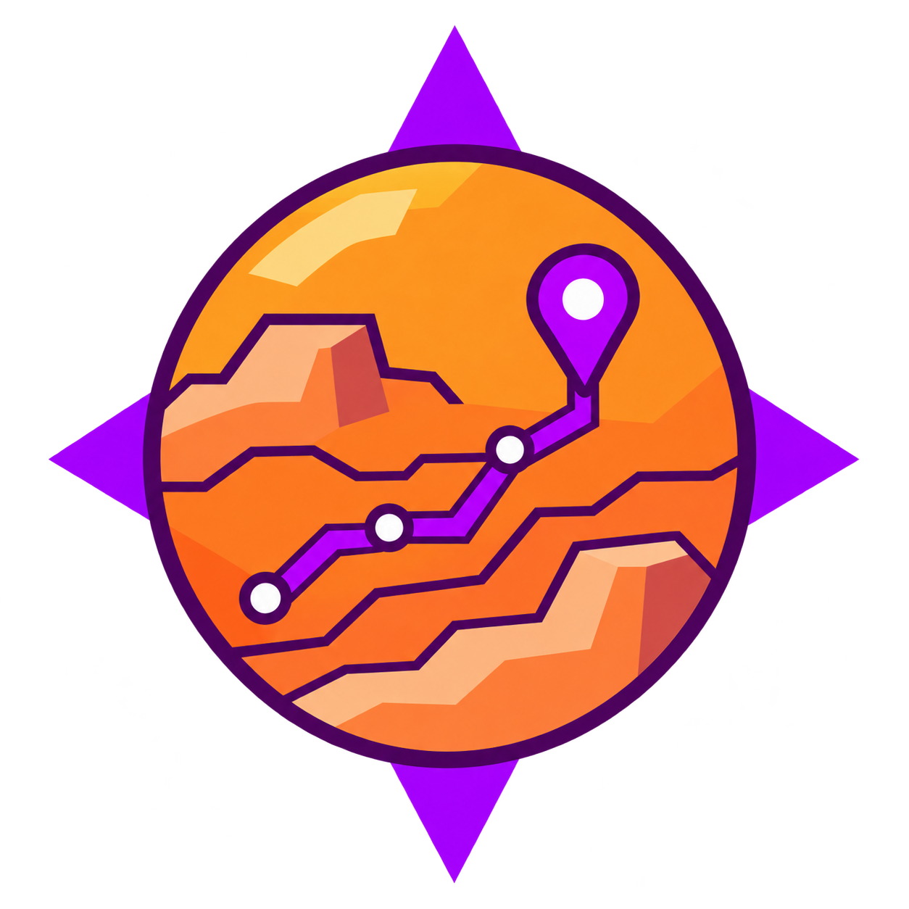

For the crew
Compare named Mars features by distance and adjustable study interests. Review the imagery and evidence behind an option before adding it to a field plan.

MARSWAYPROJECT DOCUMENTATIONPurpose · Methods · Evidence
Marsway brings destination comparison, NASA imagery and published scientific evidence into one workspace for planning a simulated Mars expedition.
Set a base, compare nearby destinations, inspect the evidence, and prepare a round trip. Crews choose their own interests; Jezero is a worked example rather than a fixed water-finding mission.
Mars observations are distributed across mission archives, maps and sample reports. Marsway connects those sources to a practical question: which destination should a crew investigate next, given its starting point, priorities and available evidence?
Compare named Mars features by distance and adjustable study interests. Review the imagery and evidence behind an option before adding it to a field plan.
See the source products, assumptions and missing inputs behind a recommendation. Observations, geological interpretations and user preferences remain distinct.
The built-in How to use walkthrough is skippable and can be reopened. Map keyboard controls include arrow keys to pan, + / − to zoom, and H to return to Jezero. No account, installation or download is required to browse the public app.
Skinner Ridge, Wildcat Ridge and Amalik provide optional Perseverance examples with surface photos and proposed activities. Their approximate highlights are separate from verified drill coordinates.
Model feature-value-v2 compares named features within the
selected radius. Every feature type begins with
50% study interest. Crews can change those interests
and the weights; the defaults do not favor valleys, craters or a
water-search mission.
Study points = study weight × feature-type interest / 100. These are editable expedition preferences, not measurements of an individual feature’s scientific importance.
Distance points = distance weight × max(0, 1 − one-way distance / search radius). Distances use a 3,396.19 km Mars reference sphere and feature centres.
Terrain points remain unknown. The score shows an unresolved range rather than awarding easy-terrain points from imagery, coverage envelopes or relief colours.
Weights must total 100. Results sort by earned study and distance points, then distance and catalogue identifier. Unknown terrain can change the ordering. Equal study interests let distance distinguish otherwise comparable candidates.
The round-trip planner includes the return to base. Travel time uses a user-supplied constant speed; total scheduled time also needs work time at each stop. Budget results reflect those assumptions and do not establish terrain feasibility.
The application combines mission imagery, mapped interpretations and published observations. Its Data & sources registry provides product identifiers, credits, reviewed metadata, checksums and explicit unknowns.
| Source | Contribution | Important limit |
|---|---|---|
| NASA Trek · MGS MOC | Global visible context and a bundled coarse fallback overview. Credit: NASA/JPL/MSSS. | Low-detail reference imagery; no terrain measurements or positioning accuracy are inferred. |
| MRO CTX · Caltech / Esri | Mars-wide visible imagery and feature-centred orbital previews. Credit: NASA/JPL/MSSS/The Caltech Murray Lab/Esri. | The global mosaic is uncontrolled. Alignment and valid-pixel coverage remain unverified. |
| NASA Trek · Jezero CTX / HiRISE | Regional high-resolution imagery, with HiRISE prioritized when enabled. Credits include NASA/JPL-Caltech/USGS and University of Arizona. | Detailed coverage is regional; service envelopes do not guarantee valid pixels or exact sample alignment. |
| Mars Odyssey · THEMIS | Optional daytime infrared context. Credit: NASA/JPL-Caltech/ASU. | Infrared brightness is not a direct elevation or mineral measurement. |
| MOLA / HRSC relief | Global colour hillshade for regional relief context, combining NASA MGS and ESA Mars Express observations. | Colour relief provides no numerical height readout or measured 3D surface in the app. |
| USGS · Jezero CTX DTM | Local elevation colours, derived exploratory gradients and sparse numerical terrain context from 20 m source cells. | Registration, physical slope validation and height conversion remain unresolved. These products do not qualify routes for travel. |
| USGS global geology / Jezero geology | Regional-scale geological interpretations and local map units. | Mapped units differ from direct rover observations; scale and alignment limits remain visible. |
| IAU / USGS nomenclature | Named features, catalogue centres, approximate dimensions and links to official feature records. | Named features are not a complete obstacle inventory. A catalogue centre is not a chosen observation site. |
| Perseverance sample records / PDS position evidence | Jezero sample facts, retained Navcam photographs and location dossiers. Image credit: NASA/JPL-Caltech. | Sampling sites, rover positions and drill points are different. Exact drill coordinates remain unverified. |
| Perseverance MEDA | Dated historical environmental observations from published NASA/JPL reports. | Local, historical readings are not current weather or a Mars-wide forecast. |
Individual acquisition dates, source versions and ground accuracy are not established for every mosaic. Missing values stay unknown. Metadata checksums identify retained bytes; they do not certify scientific accuracy or freeze remote tile content.
React and TypeScript implement discovery, evidence review and trip planning. CesiumJS renders the Mars reference globe. Vite builds the static site and its public assets.
Bounded Python pipelines prepare local terrain, geology and catalogue products. Source manifests retain provenance and checksums. Bulk source rasters are separate from browser display assets.
Drafts stay in browser-local storage. JSON import/export supports review and recovery. There is no application account, backend database or multi-user synchronization service.
GitHub Pages serves the compiled site. Automated checks cover source contracts, ranking, import validation, responsive controls, failure recovery and repository-prefixed asset paths. Live imagery is checked separately.
Use the Node.js version in .nvmrc and the committed lockfile. The package requires Node.js 22.17 or newer.
npm ci
npm run dev
# Production build
npm run build
# Browser tests after building
npm test
# Scientific source contracts (Python 3)
npm run check:dataSee the README for hosting, formatting, pipeline setup and additional verification commands. Visitors to the published app do not need this setup.
This HTML documentation page works without JavaScript and does not load the map engine, catalogue or external imagery. Its source is available in the repository.
The next engineering steps are to validate local locations and terrain, establish a bounded analysis area, and evaluate obstacle-aware routes against explicit crew or vehicle assumptions.
NASA, JPL, USGS, IAU, ESA and the credited mission and data teams produced the observations and source products used here. The app retains product credits and Cesium attribution. Consult the NASA media guidelines, JPL image-use policy and individual source terms.
OpenAI Codex assisted with implementation, documentation, source investigation and automated checks. OpenAI image generation created the app emblem using the team logo as a style reference. The team is responsible for reviewing the results and scientific limitations. No AI-generated scientific measurements are presented.
Marsway is an independent prototype, not a NASA operational system or an endorsed mission-planning product. Work began before the official event; competition eligibility remains unconfirmed. See the organizer’s timing clarification and the project’s submission notes.